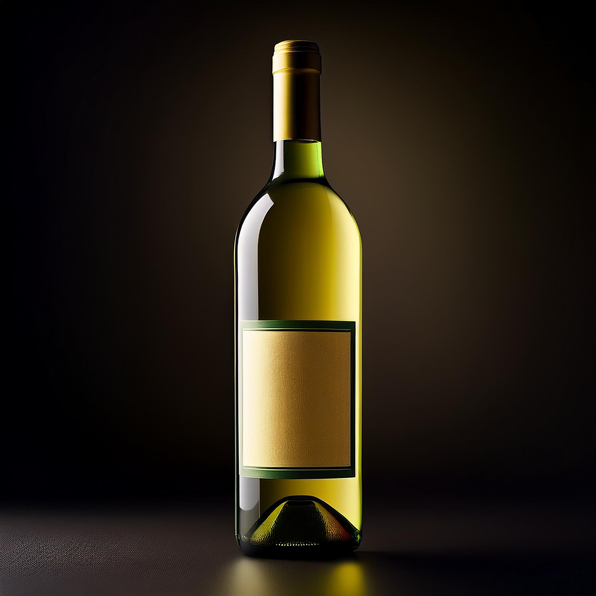
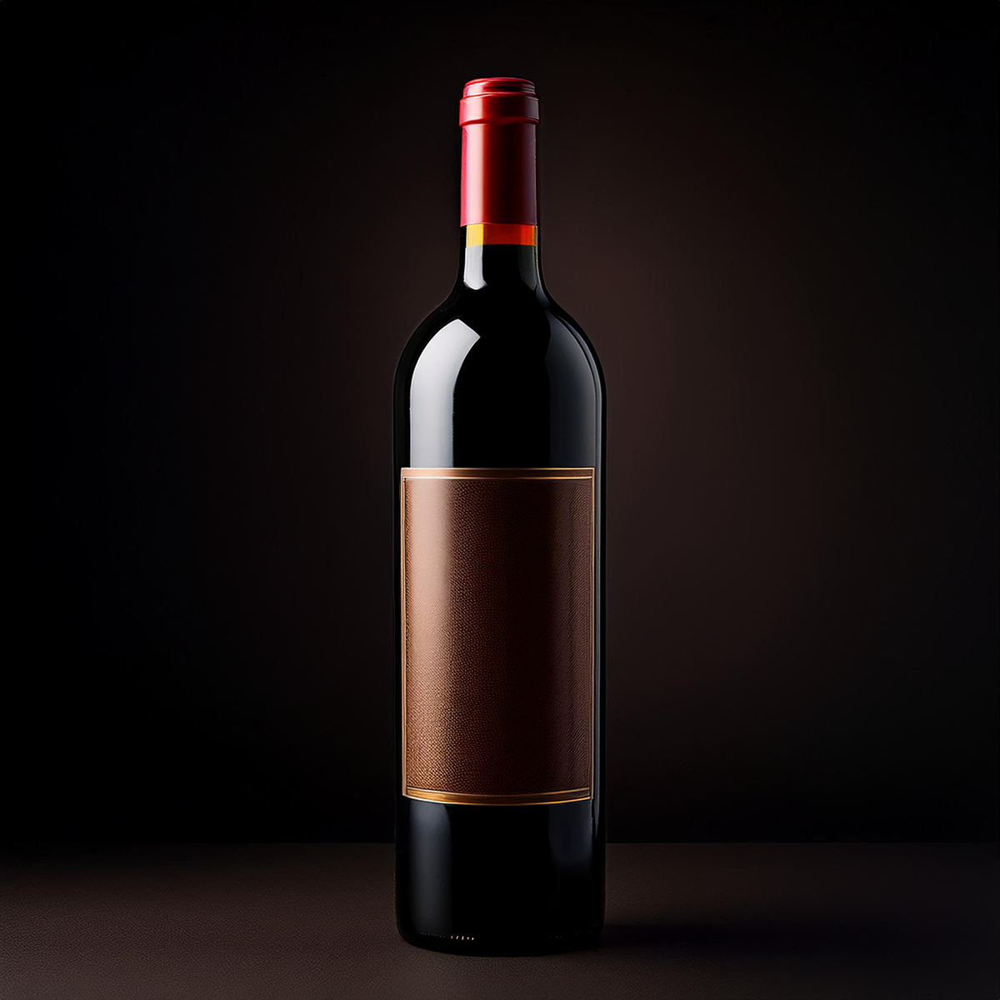
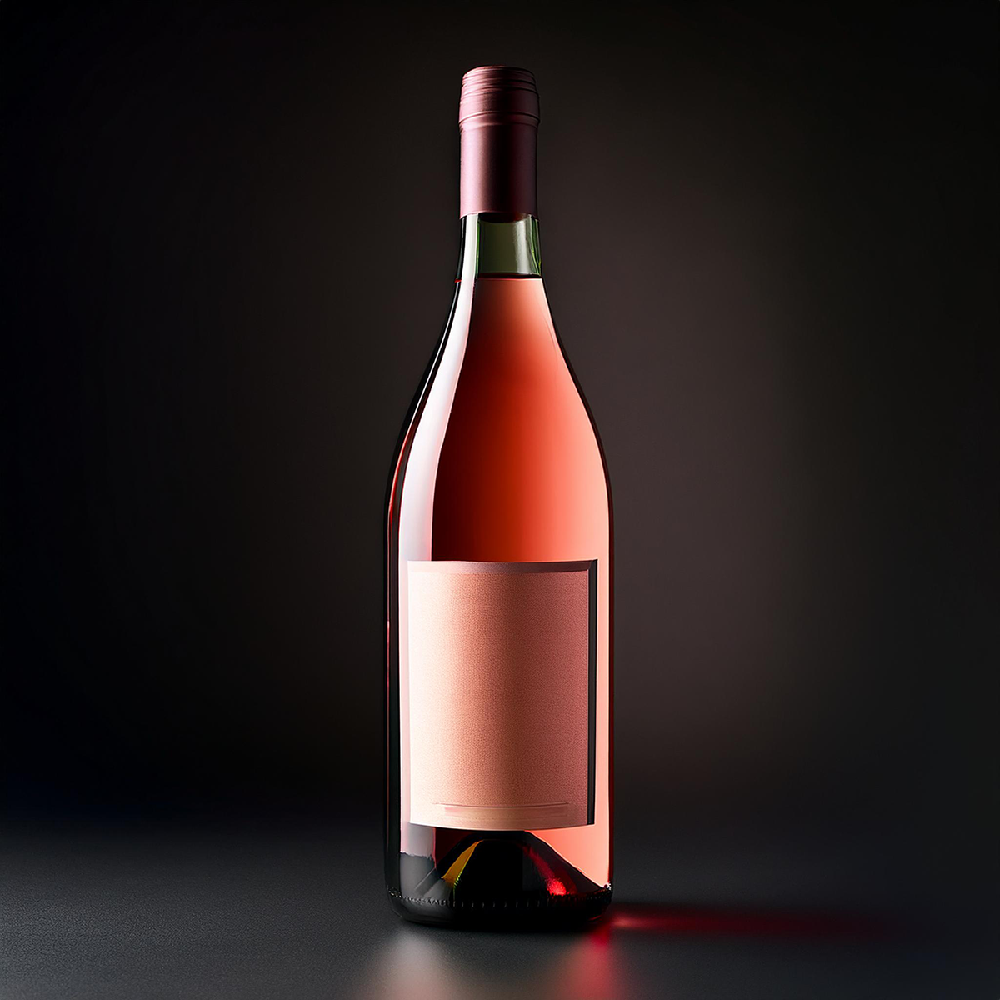
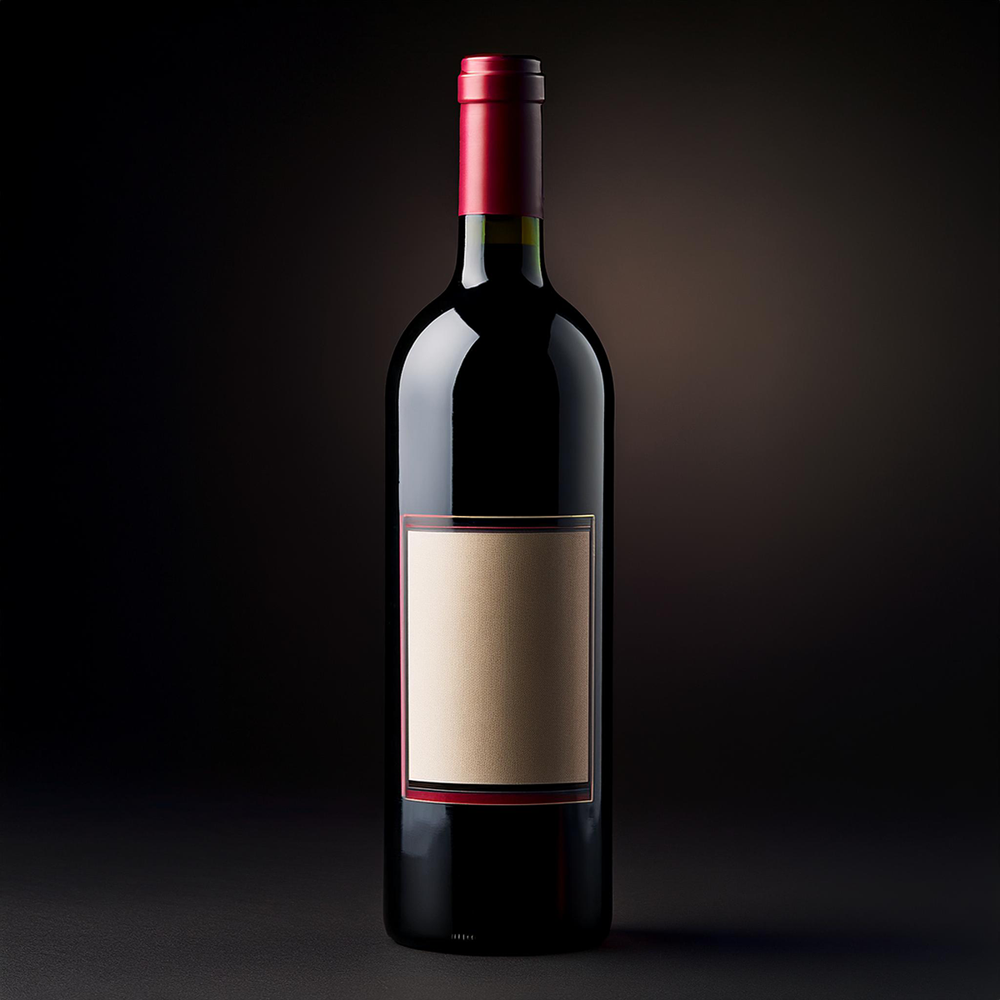
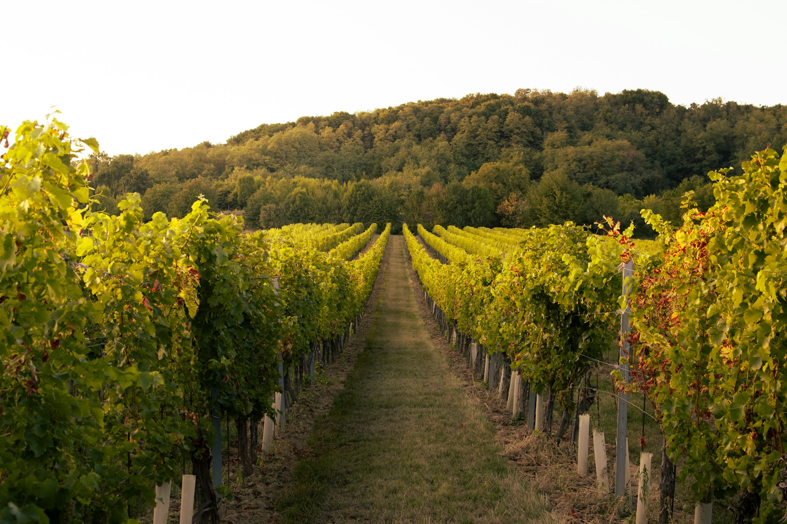
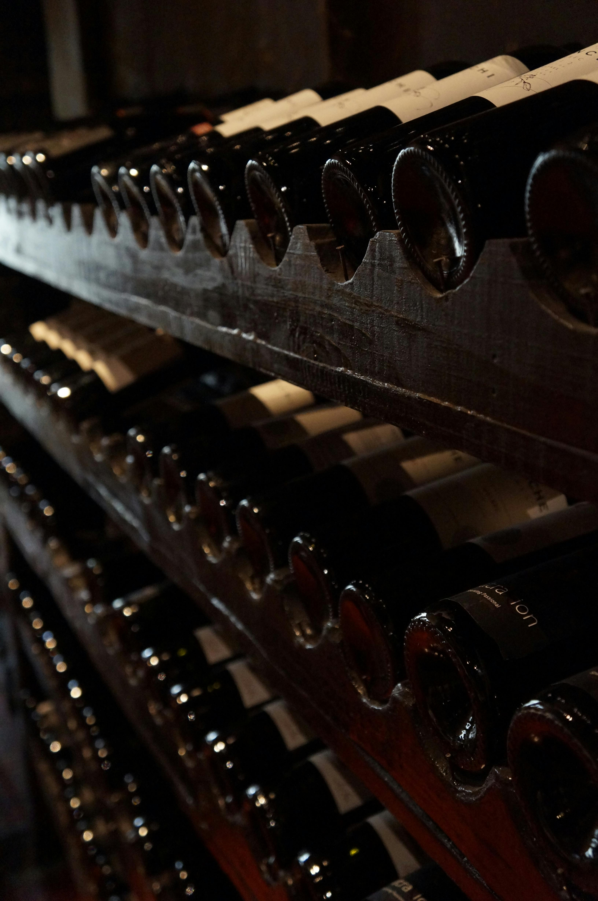
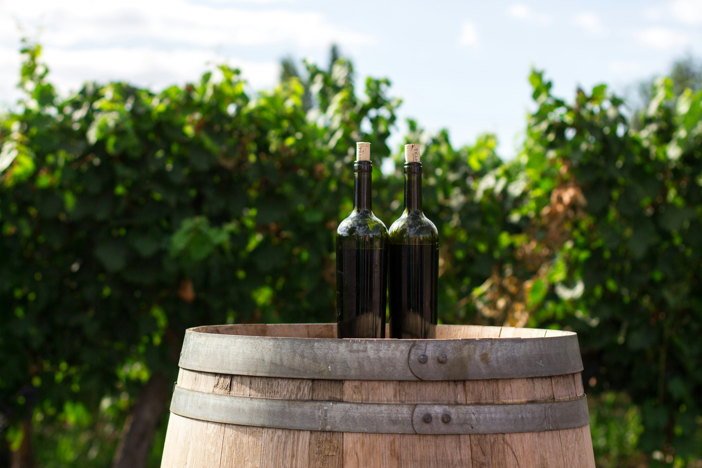
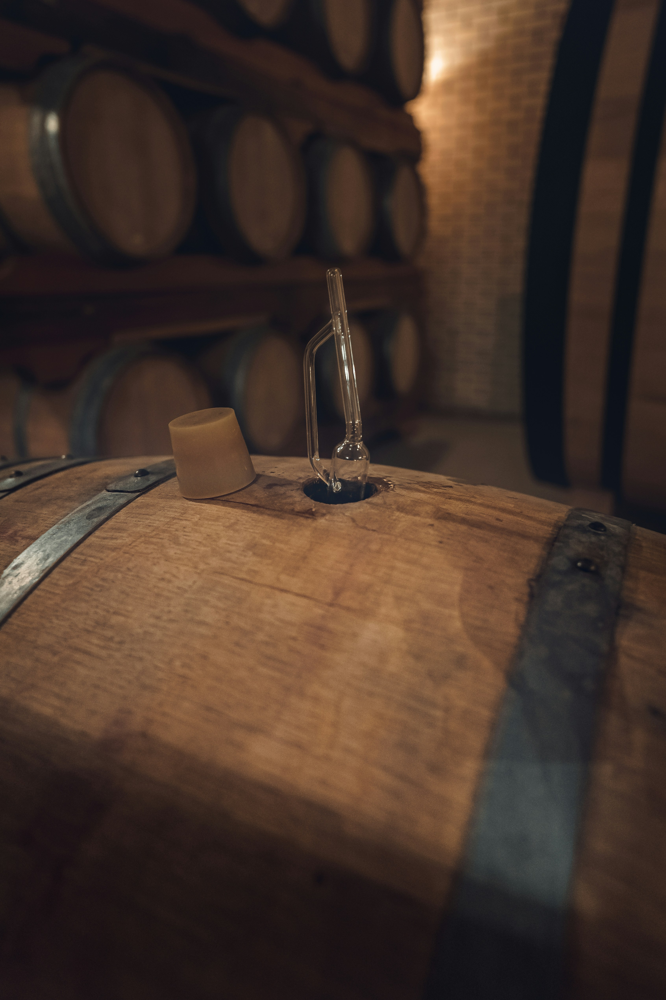

BLANCO DULCE
Un vino blanco dulce es suave y afrutado. Ideal para acompañar postres, quesos suaves o disfrutar solo como aperitivo.
Comprar¡Brindemos con gozo, cada sorbo es un momento hermoso!

Un vino blanco dulce es suave y afrutado. Ideal para acompañar postres, quesos suaves o disfrutar solo como aperitivo.
Comprar
El vino tinto Merlot es suave y aterciopelado. Ideal para acompañar carnes blancas, pastas y quesos suaves.
Comprar
Sabores de frutos rojos como fresa y frambuesa. Perfecto para disfrutar en climas cálidos y se marida bien con postres, quesos suaves o platos ligeros como ensaladas y aperitivos.
Comprar
El vino Tannat Cabernet es robusto e intenso. Ideal para acompañar carnes rojas, asados y platos con salsas intensas.
ComprarUn vino blanco varietal es fresco y aromático. Ofrecece una experiencia vibrante y refrescante al paladar, ideal para maridar con pescados, mariscos y ensaladas.
Comprar
Viñedos
Nuestros viñedos son el corazón de la bodega, cultivados con esmero para producir uvas de la más alta calidad. Cada parcela está cuidadosamente manejada para optimizar el crecimiento de las vides, asegurando que cada cosecha refleje la esencia del terroir y contribuya a la creación de vinos excepcionales.
Viñedos
Utilizamos técnicas cuidadosas para asegurar que cada racimo llegue a nuestra bodega en perfectas condiciones, lo que garantiza la calidad y el sabor excepcionales de nuestros vinos.
Utilizamos la sustentabilidad en nuestra bodega para proteger el medio ambiente y garantizar la calidad del vino.
VerNuestra bodega, tiene una capacidad de 5 millones de litros y está equipada con tecnología avanzada.
Ver

